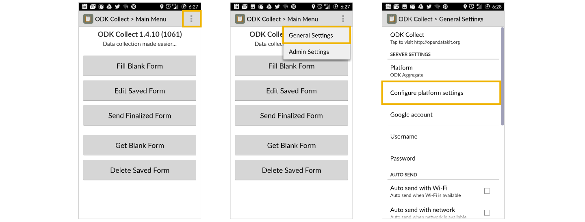

Collecting Data with ODK Collect (Open Data Kit)
- Overview
- Initial Setup
- Loading Your Questionnaire
- Data Collection
- Uploading Data
- Collecting Location Data: GeoTrace, GeoPoint and GeoShape
- Editing Data
- Deleting Questionnaires
- ODK Troubleshooting
Overview
Field data collection is an important part of the land and resource rights documentation process. The Cadasta Platform is designed to accommodate a couple of tools for data collection, allowing for ingestion of data. One of those tools is Open Data Kit, or ODK Collect (which we refer to as ODK for short).
ODK is a free, open source mobile data collection application for Android devices (sorry Apple fans). To get started, download ODK Collect from the Google Play Store, or wherever you acquire your applications.
This section provides an overview of how ODK and Cadasta work together:
- First, you'll set up ODK on an Android device.
- Then you'll load the questionnaire you want to use for data collection.
- Finally, it's time to collect your data!
- When you're back to WiFi, upload your data to the Cadasta Platform.
Important! Steps 1, 2, and 4 require being near WiFi. You may also want to test step 3 before heading out into the field, just in case you need to troubleshoot or make any changes.
For more information and documentation about ODK generally, visit opendatakit.org.
Initial Setup
To get started, download ODK from the Google Play Store, or wherever you acquire your applications.
If this is the first time you've used ODK with the Cadasta Platform, you'll need to configure ODK for direct syncing. To do this, you'll need to set up your Cadasta account if you haven't already (see Getting Started).
Once you've created your account and installed ODK, open the application.
From the opening screen (the Main Menu), tap the three dots in the upper right, then select General Settings, then Configure Platform Settings.

On this screen, enter the Platform URL along with your username and password. The username and password do not have to be the same as they are on your Cadasta account, but it may be helpful to keep them consistent. The URL you need should be similar to the one you used when you signed up for your Cadasta account.
https://platform.cadasta.org/collect (if for active projects); or
https://demo.cadasta.org/collect (if for testing)
You now have an ODK account that's synced with the Cadasta Platform.
Click the back button twice to return to the main menu.
Loading your Questionnaire
Once you've connected ODK with Cadasta, the next thing you need to do is load the questionnaire you're using for your data collection project.
From the main menu, select Get Blank Form.
At this stage, you may be asked to provide your Cadasta username and password. Enter this information and then wait a few moments to be connected to the server.
In the page that follows, you'll see a list of questionnaires that have been loaded for your organization's projects. Place a checkmark next to the form you'd like to use and tap Get Selected.

Now, ODK is configured to record data using the questions in your questionnaire.
Data Collection
Once you've initialized ODK and loaded your questionnaire, now it’s time to collect some data!
From the ODK Main Menu select Fill Blank Form then the questionnaire that you want to use.
Swipe left twice to get started completing the form.
- Continue answering all the survey questions until you reach the "End of survey" message. During this step, swipe left after you've answered each question.
- During this section, you'll likely be asked to GeoTrace your location data, or add a GeoShape or GeoPoint. For more information about how this works, see Collecting Location Data: GeoTrace, GeoPoint and GeoShape.
- When all of your questions are completed, select the Mark Form as finalized checkbox and Save Form and Exit.
Collecting Location Data: GeoTrace, GeoShape, and GeoPoint
During data collection, you'll be asked to collect data specifying your location using one of the following options.
GeoTrace creates lines (collections of two or more GPS coordinates) based on your location. It's also the default option provided in both the standard and minimum questionnaires.
GeoShape creates polygons (closed shapes). To create a GeoShape, you can use your finger to draw a shape on the map.
GeoPoint creates points (single GPS coordinates) based on your location.
To learn more about how to configure these options in your questionnaire, see Questionnaires & Custom Data Collection.
GeoTrace
When it's time to start your GeoTrace, you'll be prompted to Start GeoTrace:
In the next screen, you'll be asked to Zoom to Current Location.
Once your location is identified, you'll be asked to select either Automatic or Manual mode.
Manual mode allows you to record your geotrace manually. Every time you want to drop a pin, click the Record Location Point button at the top of the map. For example, it's common practice to drop pins at each corner of a location.
Automatic mode records your location at set intervals, for example once every 20 seconds. This mode is helpful if you're recording a large area.
The amount of time you should set for your interval depends on how you're collecting the data. For example, if you're driving, you may want to set the interval to be once every 5 seconds. If you're walking, you may want to record once every 20-30 seconds.
If you know you need to record the corners of a large area, then you might want to try manual mode. Or, if you're using automatic mode, pause on the corner long enough for the pin to drop. Alternatively, in automatic mode, you can also use the Record Location Point button to manually drop a pin.
For either automatic or manual mode, keep in mind that the more points you record, the bigger your data file will be and the harder it will be to upload when you return to WiFi or you mobile network. Collect all the points you need - and only the points you need!
When you're done with your GeoTrace, hit the pause button. You'll then be asked to save your information as a polyline or polygon.
If you've recording a point or line, choose polyline. If you've recording an area and created a closed shape, choose polygon.
Finally, you'll be brought to a confirmation screen where you can view your GeoTrace.
Note that ODK calls a geotrace a parcel regardless of what kind of location it is.
GeoShape
GeoShape is designed for making shapes (or polygons) to represent a specific location. For example, you can use GeoShape to draw a boundary around a building or land area.
If you're collecting data using GeoShape, you'll first be asked to zoom to your current location or to a saved feature.
In the next screen, you'll be able to start making your shape. Press the screen to place markers around your location, and notice the red lines that are created between each marker. To close your polygon, press on the same point where the polygon began.
When you're ready to save your GeoShape, hit the Save icon on the right. If you wish to discard it, you can also hit the Trash button above it.
GeoPoint
To collect single GPS coordinates, you can use GeoPoint. GeoPoint only works by tracking your specific location (drawing with your finger is not available).
When it's time to collect your GeoPoint, it will first load your location. This may take a few minutes.
Next it will give you some GPS accuracy information. Here, the accuracy is within a 24-meter radius of where the user is standing.
Once the location and accuracy information is loaded, you're ready to save your GeoPoint.
Uploading Data
When you get back to WiFi or a mobile network, you can upload your completed questionnaires to the Cadasta Platform.
From the main menu, click Send Finalized Form and then check off all the forms that you want to upload (use the Toggle All button to select all questionnaires). Then select Send Selected.
Finally, you'll get a confirmation message confirming that the data has been sent.
It's a good idea to confirm that you see the data on the Cadasta Platform. Then you can delete any completed questionnaires from your Android device.
Editing Data
ODK makes editing your forms relatively easy. From the main menu, select Edit Data, then the form you want to edit. When you're done, save your changes.
Deleting Questionnaires
You can also delete unwanted questionnaires by selecting Delete Data from the main menu. On the page that follows, you can toggle between Saved Forms and Blank Forms to delete either one.
ODK Troubleshooting
If you're having trouble using ODK, the answer to your question may be here. If not, please contact us and we'll do our best to help you work through the issue.
Trouble Loading Your Questionnaire
ISSUE: I can't connect to the Cadasta server because my username and password aren't working. (And yes, I've checked to make sure they're correct!)
The easiest thing to do here is to go to the Cadasta platform and change your password. Then, return to ODK and enter your new password there.
ISSUE: I'm getting a message that says to "Please wait a few moments," but it's been much much longer than that.
If the above screen is taking longer than you think it should, hit Cancel. You may be correctly connected, or you may be asked to enter your username and password again.
Trouble Adding Location Data
ISSUE: ODK won't let me add any location data.
If you get the screen like the one above, unfortunately it's a known (and frustrating!) bug. Cadasta is aware that some Android devices simply refuse to log their GPS data with ODK. Our team is working to resolve the issue.
In the meantime, here are some alternatives:
- Try using another Android device. This mysterious bug does not appear on all of them.
- Try using GeoODK, which works very similarly to ODK. Learn more about how to use GeoODK with Cadasta.